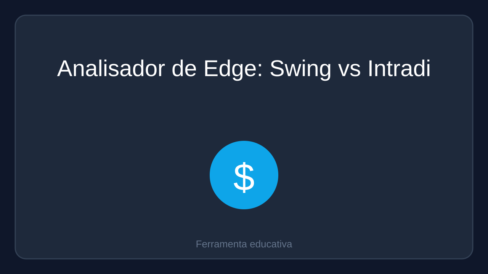

Ferramenta educativa que compara o desempenho de operações swing (1 a 3 dias) e intradiário (30min a 2h) a partir dos seus próprios números de taxa de acerto, ganho médio e perda média. Ela calcula o P&L total, a expectativa por operação e exibe um gráfico comparativo. Não é recomendação financeira e os resultados são apenas estimativas baseadas nos dados inseridos.
Para quem: Traders iniciantes e intermediários que querem avaliar, com dados próprios, em qual horizonte de tempo suas operações têm melhor expectativa.
Experimentar a demonstração grátis
R$ 19,90 pagamento único
Comprar por R$ 19,90Depois do pagamento a loja entrega o arquivo (link de download ou anexo).